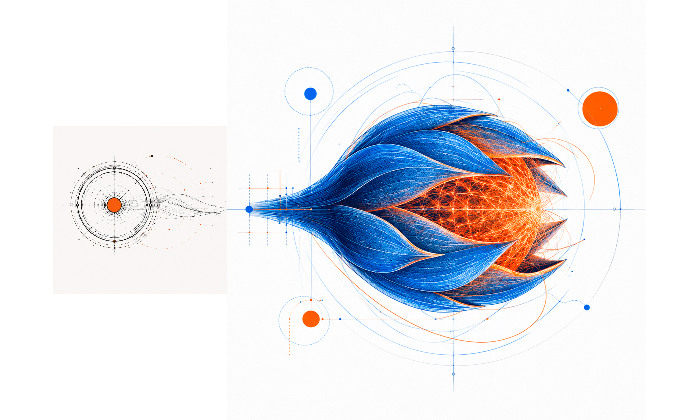

Señal 01
No falta talento. Falta capacidad de hacerlo emerger.
La obsolescencia silenciosa comienza cuando la organización deja de aprender con velocidad y protege más sus certezas que su capacidad de comprender lo que cambia afuera.